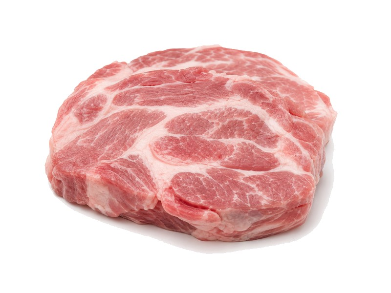

Mięsa i ryby
Karkówka wieprzowa
Karkówka wieprzowa: 17 g białka, 242 kcal, 0 g węglowodanów i 19 g tłuszczu na 100 g. Kategoria: Mięsa i ryby.
Kalorie242 kcalna 100 g
Białko / proteiny17 g
Węglowodany0 g
Tłuszcz19 g
Cena (szac.)~2,33 złza 100 g
Ceny zaktualizowano: maj 2026 (szacunek — ceny w popularnych supermarketach)
Porcja: kotlet (120g)
| Kalorie | 290 kcal |
|---|---|
| Białko | 20.4 g |
| Węglowodany | 0 g |
| Tłuszcz | 22.8 g |
| Cena (szac.) | ~2,79 zł |
Szczegółowe składniki odżywcze na 100 g
| Wartość energetyczna (kalorie) | 242 kcal |
|---|---|
| Białko (proteiny) | 17 g |
| Węglowodany | 0 g |
| Tłuszcz | 19 g |
| Tłuszcze nasycone | 7 g |
| Tłuszcze nienasycone | 12 g |
| Witaminy i minerały | Witamina B1, Żelazo, Cynk |
| Współczynnik kcal / 1 g białka | 14.2 |
| Cena produktu (szac. za 100 g) | ~2,33 zł |
| Cena za 100 g białka (szac.) | ~13,68 zł |